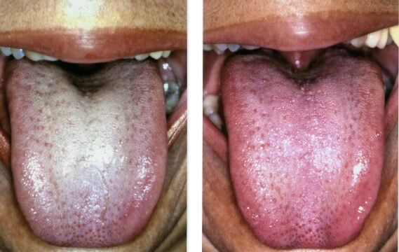
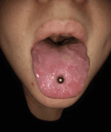
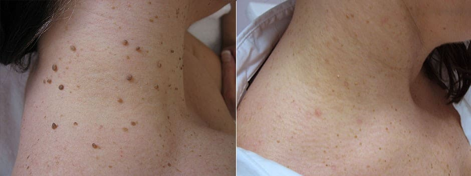

LIDAH PUTIH DIAKIBATKAN OLEH PARASIT DALAM TUBUH ANDA!
JIKA ANDA MEMILIKI LIDAH PUTIH, BAU MULUT, ATAU LINGKARAN HITAM DAN KANTUNG DI BAWAH MATA ANDA - ARTINYA PARASIT MEMAKAN TUBUH ANDA DARI DALAM SAAT INI JUGA!
LIDAH PUTIH DIAKIBATKAN OLEH PARASIT DALAM TUBUH ANDA!
JIKA ANDA MEMILIKI LIDAH PUTIH, BAU MULUT, ATAU LINGKARAN HITAM DAN KANTUNG DI BAWAH MATA ANDA - ARTINYA PARASIT MEMAKAN TUBUH ANDA DARI DALAM SAAT INI JUGA!
Jika seseorang memiliki lidah putih atau bau mulut, artinya bahwa koloni parasit mematikan telah menghuni organ-organ dalamnya dan secara perlahan memakan daging mereka dari dalam.
Menurut statistik, lebih dari 1 miliar orang telah terinfeksi parasit. Cara paling akurat untuk mendiagnosis infeksi ini adalah keberadaan bau mulut.
Dr. Lidya Kesuma
Seorang dokter terkenal dari Institut Parasitologi Medis dan Kedokteran Tropis. Telah menulis lebih dari 20 tulisan ilmiah tentang Parasitologi Molekuler. Peneliti diagnostik molekuler leishmaniasis.
Pengalaman kerja: lebih dari 20 tahun
Catatan editor: Institut Parasitologi Medis dan Kedokteran Tropis telah menemukan alasan sebenarnya dari kemunculan penyakit lidah putih: infeksi parasit. Penelitian terbaru telah menunjukkan bahwa produk buangan utama parasit adalah racun dan racun ini membentuk lingkungan ideal di dalam perut manusia untuk perkembangan bakteri berbahaya. Karena alasan ini, pada tubuh orang-orang yang terinfeksi oleh parasit bisa ditemukan penyakit lidah putih atau bau mulut.
Kita akan mendiskusikan masalah medis ini dengan Dr. Lidya Kesuma, seorang dokter terkenal dari Institut Parasitologi Medis dan Kedokteran Tropis.
Koresponden: Dr. Lidya, selamat sore! Saya akan memulai wawancara ini dengan pertanyaan utama: apakah benar bahwa sebagian besar populasi Indonesia telah terinfeksi oleh parasit?
Dr. Lidya: Iya benar. Sayangnya kita menempati peringkat pertama dalam hal infeksi parasit. Hal ini dikarenakan kondisi lingkungan yang sangat buruk, tidak adanya tindakan dari pihak yang berwenang, dan ketidakacuhan masyarakat terhadap masalah ini. Setiap tahun, jutaan orang meninggal dunia dikarenakan berbagai penyakit yang dipicu oleh parasit. Pada saat yang sama, jika Anda melihat sertifikat kematiannya, Anda takkan melihat catatan “kematian karena parasit” di sana. Terkecuali dalam beberapa kasus tertentu yang langka, biasanya dalam situasi di mana tidak mungkin mengabaikan keberadaan infeksi parasit, misalnya, pada kasus jantung tersumbat oleh parasit. Tidak menguntungkan bagi pihak berwenang setempat dalam bidang kesehatan untuk mengakui tingginya tingkat serangan parasit dan fakta bahwa 89% dari semua kematian diakibatkan oleh parasit. Selain itu, penyakit yang dipicu oleh parasit memaksa para pasien untuk berobat ke klinik dan membeli obat-obatan mahal. Ini adalah pangsa pasar yang sangat besar. Saya harap Anda bisa membaca yang tersirat dari pernyataan saya ini dan memahami apa maksud saya.
Koresponden: Dr. Lidya, apakah lidah putih dan bau mulut benar-benar merupakan tanda infeksi parasit?
Dr. Lidya: Benar. Berbagai kelompok penelitian sepakat bahwa produk buangan parasit menyebabkan kemunculan lidah putih (bahkan coklat) dan bau mulut pada seseorang. Selain itu, jika Anda melihat lidah Anda berubah warna, artinya parasit telah menetap di dalam tubuh Anda dan bertelur secara aktif. Ini artinya semua orang yang mengalami lidah putih atau warna tidak wajar lainnya berada dalam bahaya yang sangat besar.
Dan sekali lagi, kurang lebih 89% dari semua kematian, termasuk kematian yang dicatat sebagai kematian yang diakibatkan penyebab “alami” sebenarnya memiliki satu penyebab yang sama - parasit, yang secara perlahan memakan tubuh kita dari dalam.
Koresponden: Jadi, biasanya parasit adalah cacing atau helminth yang dapat mengakibatkan bau mulut dan lidah putih. Bagaimana bisa parasit ini mengakibatkan kematian?
Dr. Lidya: Sebenarnya, asumsi bahwa parasit yang menyerang kita hanyalah cacing saja adalah kesalahpahaman besar. Terdapat berbagai jenis parasit yang hidup dalam berbagai organ dalam tubuh manusia, yang juga menyebabkan akibat yang berbeda-beda pula. Selain itu, cacing, atau terutama helminth, sangat berbahaya. Cacing merusak usus, mengakibatkan pembusukan usus, dan kemudian kematian. Ngomong-ngomong, bahkan cacing saja sulit untuk ditemukan dan dibasmi.
Selain cacing, terdapat ribuan parasit yang dapat hidup di jantung, otak, paru-paru, darah dan perut Anda. Dan hampir semuanya mematikan. Beberapa diantaranya langsung bertindak secara agresif dan merusak tubuh. Parasit lain hidup dalam tubuh tanpa disadari hingga jumlahnya menjadi begitu besar sehingga tubuh tak mampu lagi menahan kerusakannya, sehingga orang tersebut meninggal. Parasit menyebabkan berbagai komplikasi mematikan: serangan jantung, tumor kanker, sirosis hati, nefritis, pembusukan ginjal, dll.
Pada saat yang sama, dengan yakin bisa saya katakan bahwa hampir semua orang terinfeksi oleh parasit. Masalahnya adalah bahwa kebanyakan infeksi parasit sangat sulit untuk dideteksi. Dan saat efek infeksi parasit itu terlihat, para dokter hanya berusaha mengobati gejala-gejalanya saja. Bahkan saat autopsi mayat, pemeriksaan khusus diperlukan untuk mendeteksi parasit. Setidaknya untuk sebagian besar parasit.
Satu-satunya gejala umum yang terlihat jelas yang dapat secara akurat menandakan infeksi parasit dalam tubuh manusia adalah bau mulut dan lidah putih yang sering diiringi oleh kantung mata dan lingkaran hitam di bawah mata Anda.
Koresponden: Dapatkah Anda berikan beberapa contoh spesifik kasus serangan parasit?
Dr. Lidya: 1. Situasi yang berakhir bahagia. Pasien mengeluhkan sakit perut yang sesekali muncul. Pemeriksaan menunjukkan bahwa keseluruhan usus tersumbat oleh cacing. Semua cacing menggerogoti dinding usus, kemudian proses pembusukan dimulai, dan pasien hampir mengalami sepsis. Selama operasi, sebagian usus diangkat, cacing dibersihkan, dan jaringan yang membusuk dibuang. Dan setelah seminggu dirawat secara intensif pasien ini merasa lebih sehat.
2. Rahim atau uterus dengan koloni parasit di dalamnya. Sayangnya, sudah tidak mungkin untuk membuang koloni parasit ini, karena parasit dan larva telah memenuhi rahim sepenuhnya dan memperbesar volumenya, berkali-kali lipat. Karena itu, rahim harus diangkat. Pasien saat itu selamat. Karena keracunan tubuhnya terlalu parah, dia harus menjalani terapi khusus setelah pengangkatan rahim, tapi pada akhirnya dia meninggal 3 tahun kemudian.
3. Kista ekinokokus di jantung. Penyakit ini terlambat dideteksi. Dokter yang mengobatinya awalnya mengira bahwa pasien hanya mengidap penyakit jantung koroner dan angina, tapi kenyataannya jauh lebih parah. Operasi yang dilakukan tidak berguna, pengobatan umum juga tidak membantu. Transplantasi jantung juga tidak bisa dilakukan - tidak ada donornya. Hasilnya, pasien meninggal tanpa bisa sadar lagi.
Koresponden: Bagaimana caranya kita mengetahui apakah kita terkena parasit atau tidak?
Dr. Lidya: Sayangnya, bisa dibilang saat ini tidak ada metode pasti untuk mendiagnosis parasit dalam tubuh manusia. Sebagian, ini dikarenakan ada begitu banyaknya jenis parasit (lebih dari 2.000 spesies yang telah diketahui), dan sebagian lagi karena tingginya tingkat kesulitan mendeteksi parasit. Pemeriksaan parasit yang lengkap hanya bisa dilakukan di beberapa tempat saja di Indonesia, dan biayanya sangat mahal.
Gejala-gejala awal yang mengindikasikan keberadaan parasit di dalam tubuh:
- Terdapat semacam lapisan yang mengubah lidah, lidah putih;
- Bau mulut atau halitosis;
- Lingkaran hitam, kantung di bawah mata Anda;
- Alergi (ruam, mata berair, pilek);
- Ruam dan kemerahan pada kulit;
- Papiloma atau kutil;
- Sering masuk angin, sakit tenggorokan, hidung tersumbat;
- Kelelahan kronis (Anda menjadi cepat lelah, apa pun yang Anda lakukan);
- Sering sakit kepala;
- Sembelit atau diare;
- Nyeri pada sendi dan otot;
- Gugup, susah tidur, dan gangguan nafsu makan
Tanda-tanda awal bahwa Anda dan orang tersayang terinfeksi parasit adalah bau mulut, lidah putih, atau lingkaran hitam dan kantung mata.
Selain itu, jika ada setidaknya salah satu dari gejala-gejala ini, maka 99% kemungkinan terdapat parasit dalam tubuh Anda. Dan Anda harus membasmi parasit itu secepat mungkin!
Koresponden: Bagaimana caranya kita bisa membasmi parasit dan melindungi diri kita dari parasit?
Dr. Lidya: Kondisi saat ini terkait dengan obat-obatan untuk mengobati serangan parasit lumayan rumit. Tentu saja ada beberapa obat yang sangat spesial yang dapat membersihkan tubuh dari cacing tertentu. Ada juga beberapa obat yang kurang lebih efektif dalam membasmi beberapa jenis cacing hati dan parasit hati tertentu. Masalah utamanya adalah obat-obatan ini hanya membunuh satu jenis parasit tertentu saja. Padahal setiap orang setidaknya terinfeksi dengan 7-8 spesies parasit. Jika kita mengambil angka rata-ratanya, kita mendapatkan kurang lebih 11-14 jenis parasit untuk setiap orang yang terinfeksi.
Hanya ada satu solusi yang memungkinkan kita untuk membasmi parasit. Sebuah obat anti parasit yang disebut BIODETO. Uji coba klinis telah menunjukkan hasil yang luar biasa. Hingga saat ini ekspor obat ini dilarang hingga obat ini dapat tersedia sepenuhnya untuk seluruh populasi masyarakat Indonesia.
Koresponden: Apa yang membuat BIODETObegitu spesial? Apa perbedaan antara obat ini dan produk anti parasit lainnya?
Dr. Lidya: Seperti yang saya katakan sebelumnya, hingga sekarang, produk ini adalah satu-satunya solusi anti parasit yang ampuh di seluruh dunia. Produk ini membantu membasmi parasit sepenuhnya. Itulah mengapa produk ini sangat diincar oleh apotek dan perusahaan farmasi internasional. Dibandingkan dengan obat anti parasit lain, obat ini bekerja langsung melawan semua tipe parasit yang dapat menginfeksi tubuh manusia. Dengan mempertimbangkan berbagai masalah dalam diagnosis parasit, produk ini memungkinkan Anda untuk membersihkan keseluruhan tubuh secara efektif. Sebelumnya saya telah menyebutkan bahwa hampir mustahil untuk mendeteksi jenis parasit apa yang telah menginfeksi tubuh kita. Dan BIODETO membasmi serta membunuh semua parasit yang hidup di mana saja di dalam tubuh - dari otak dan jantung hingga hati dan usus. Tidak ada obat lain yang tersedia saat ini yang mampu melakukan ini.
Selain itu, ini bukan obat kimia, melainkan produk yang sepenuhnya alami, dengan begitu tidak ada reaksi alergi, ketidakseimbangan flora usus, dan berbagai masalah lain yang dapat muncul saat mengobati penyakit dengan pil-pil konvensional yang seringkali memaksa tubuh untuk memproses banyak senyawa kimia.
PENTING! Pabrikan produk BIODETO ini telah meluncurkan program promosi spesial, berkat program promosi ini obat ini kini tersedia dengan diskon hingga 50%!
*Ini adalah penawaran dengan waktu terbatas.
1. Efektivitas BIODETOdihitung menggunakan teknik standar (rasio jumlah pasien yang sembuh terhadap total jumlah pasien dalam kelompok 100 orang yang diobati menggunakan BIODETO):
- Cacing dan telur hilang: 99%
- Normalisasi fungsi dan kondisi pankreas: 87%
- Nafas sehat: 99,5%
- Kulit sehat: 95%
- Alergi kulit hilang: 90%
- Lidah berwarna hilang: 99%
- Radang lambung, bisul, dan diare hilang: 93%
- Anemia hilang: 99%
- Papiloma dan kutil hilang: 99%
2. Tidak ada efek samping negatif, termasuk reaksi alergi, yang ditemukan.
3. BIODETOdiakui sebagai obat paling ampuh dalam melawan parasit dalam tubuh manusia.
Selain Indonesia, obat ini telah disertifikasi di Eropa di Universitas Parasitologi di Paris. Uji coba klinis telah sepenuhnya mengkonfirmasi data yang didapatkan di Indonesia. Penelitian di Perancis tersebut bahkan melaporkan persentase kesembuhan yang lebih tinggi. Saat ini, serangkaian uji coba klinis di Tiongkok, Jepang, dan Vietnam hampir selesai dilakukan. Negara-negara Asia memiliki ketertarikan besar akan obat ini. Semua tes tanpa terkecuali mengindikasikan bahwa produk ini memiliki tingkat efisiensi yang sangat tinggi.

Koresponden: Dr. Lidya, apakah ada yang ingin Anda sampaikan kepada para pembaca kami sebelum mengakhiri wawancara ini?
Dr. Lidya: Satu-satunya yang ingin saya katakan adalah, jagalah kesehatan Anda. Anda mungkin tidak percaya, tapi kemungkinan parasit hidup dalam tubuh Anda mencapai 97-98%. Parasit dapat berada di mana saja - di dalam darah, usus, paru-paru, jantung, otak. Parasit dapat memakan tubuh Anda dari dalam dan pada saat yang sama meracuni tubuh Anda. Hasilnya, muncul banyak masalah kesehatan yang dapat mengurangi usia Anda hingga 15-25 tahun. Selain itu ada juga risiko kematian mendadak, yang biasanya terkait dengan efek parasit di dalam tubuh manusia. Jangan tunggu hingga terlambat. Bersihkan tubuh Anda sekarang juga.
Perhatian!
Portal kami menawarkan para pembaca diskon promosi untuk pembelian BIODETO. Coba keberuntungan Anda dengan menekan tombol PUTAR. Jika Anda beruntung, Anda akan bisa membeli produk ini dengan harga yang lebih murah dari biasanya! Semoga beruntung!
 PUTAR
PUTAR
DISKON 980000Rp 490000Rp
- 00minutes
- :
- 00seconds
- :
- 00milliseconds
Catatan, promosi diskon 50% terbatas hingga 08.10.2019




Salam hangat, Dr. Lidya


Produk luar bisa. Bisa dibilang produk ini menyelamatkan pernikahan kami. Selama dua tahun terakhir, istri saya tidak mau mencium saya, dll, karena bau mulut saya. Istri saya akhirnya minum obat ini bersama saya untuk pencegahan dan juga mendukung saya, dan kami berdua merasakan peningkatan signifikan dalam kesehatan. Kami merasa lebih muda dan lebih berenergi… Setelah kami berhasil menyingkirkan parasit, kami jadi seperti pengantin baru lagi!


Paketnya datang dengan sangat cepat.
Salam hangat, Dr. Lidya
Salam hangat, Dr. Lidya

Pesanannya datang sangat cepat! Operator menelepon saya untuk mengkonfirmasi pemesanan hampir saat itu juga. Hidup dengan cacing dalam tubuhmu memang tidak bagus.

Salam hangat, Dr. Lidya